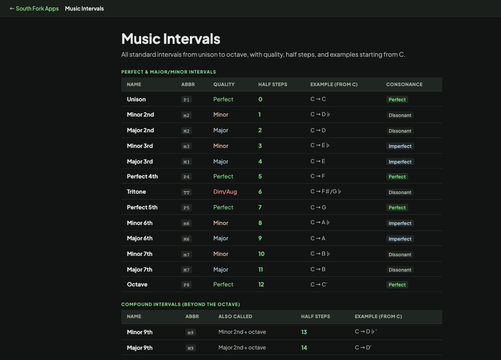

Music Intervals
All standard intervals from unison to octave, with quality, half steps, and examples starting from C.
| Name | Abbr | Quality | Half Steps | Example (from C) | Consonance |
|---|---|---|---|---|---|
| Unison | P1 | Perfect | 0 | C → C | Perfect |
| Minor 2nd | m2 | Minor | 1 | C → D♭ | Dissonant |
| Major 2nd | M2 | Major | 2 | C → D | Dissonant |
| Minor 3rd | m3 | Minor | 3 | C → E♭ | Imperfect |
| Major 3rd | M3 | Major | 4 | C → E | Imperfect |
| Perfect 4th | P4 | Perfect | 5 | C → F | Perfect |
| Tritone | TT | Dim/Aug | 6 | C → F♯/G♭ | Dissonant |
| Perfect 5th | P5 | Perfect | 7 | C → G | Perfect |
| Minor 6th | m6 | Minor | 8 | C → A♭ | Imperfect |
| Major 6th | M6 | Major | 9 | C → A | Imperfect |
| Minor 7th | m7 | Minor | 10 | C → B♭ | Dissonant |
| Major 7th | M7 | Major | 11 | C → B | Dissonant |
| Octave | P8 | Perfect | 12 | C → C' | Perfect |
| Name | Abbr | Also Called | Half Steps | Example (from C) | |
|---|---|---|---|---|---|
| Minor 9th | m9 | Minor 2nd + octave | 13 | C → D♭' | |
| Major 9th | M9 | Major 2nd + octave | 14 | C → D' | |
| Minor 10th | m10 | Minor 3rd + octave | 15 | C → E♭' | |
| Major 10th | M10 | Major 3rd + octave | 16 | C → E' | |
| Perfect 11th | P11 | Perfect 4th + octave | 17 | C → F' | |
| Perfect 12th | P12 | Perfect 5th + octave | 19 | C → G' | |
| Major 13th | M13 | Major 6th + octave | 21 | C → A' |
Music Intervals
Music Intervals is a full reference for interval names, abbreviations, semitone counts and audible examples, covering everything from a unison to an octave and beyond into compound intervals.
How intervals are counted
An interval is measured in semitones but named by letter distance, which is why the two do not always agree. C to E spans four semitones and three letter names (C, D, E), so it is a major third rather than a fourth.
The twelve intervals inside an octave are: unison 0, minor second 1, major second 2, minor third 3, major third 4, perfect fourth 5, tritone 6, perfect fifth 7, minor sixth 8, major sixth 9, minor seventh 10, major seventh 11, octave 12.
Worked example
Identifying the interval from C to G:
- Semitones7
- Letters spannedC D E F G, so five
Result: A perfect fifth. It is the interval at the root of almost every chord and the reason the circle of fifths works.
When it helps
- Naming an interval you hear or see written.
- Building chords, since every chord is a stack of specific intervals.
- Ear training by associating each interval with a song that opens on it.
- Understanding why some pairs of notes sound stable and others tense.
Common mistakes
- Counting semitones and calling it the interval name. A diminished fourth and a major third are both four semitones but are spelled and used differently.
- Forgetting the tritone is neither major nor minor. At exactly six semitones it sits halfway and belongs to neither family.
